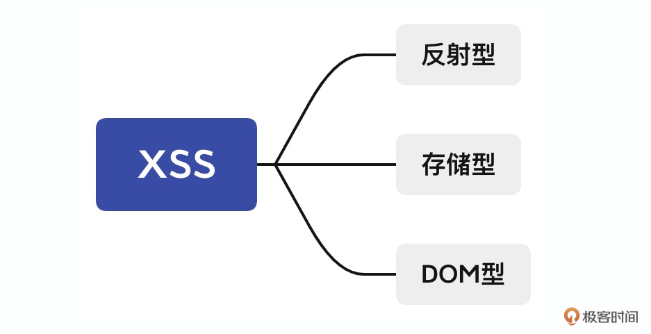
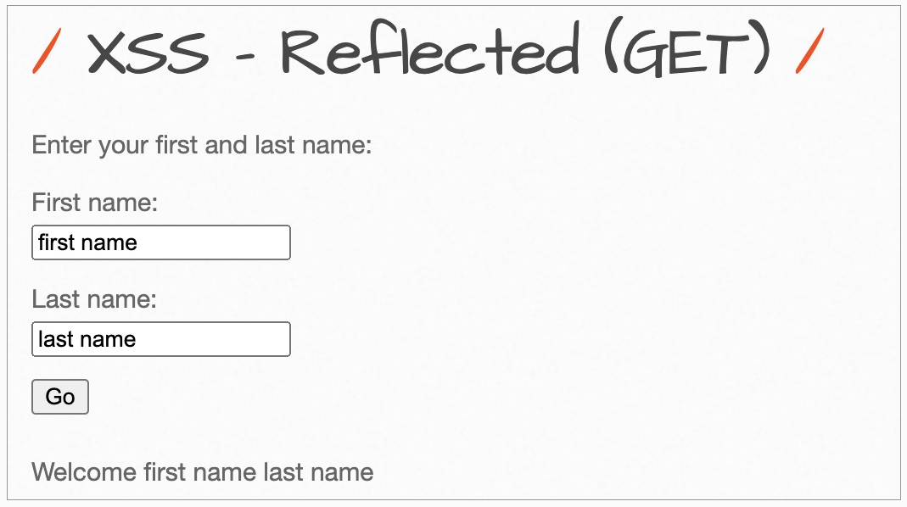
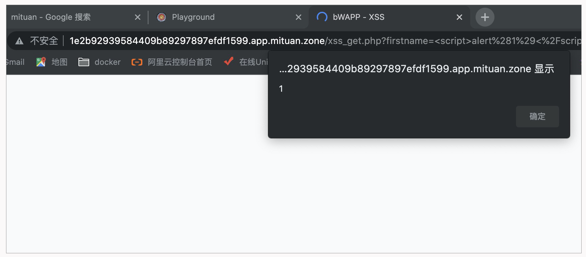
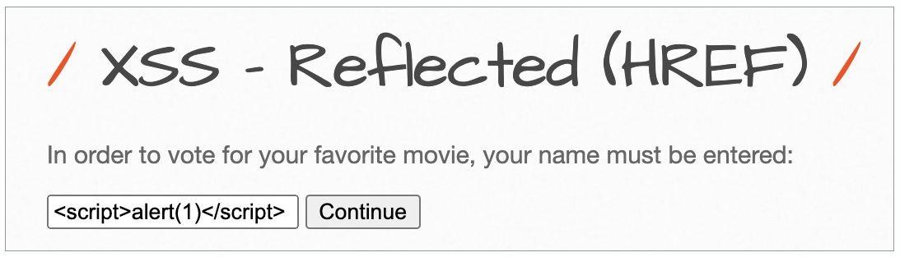
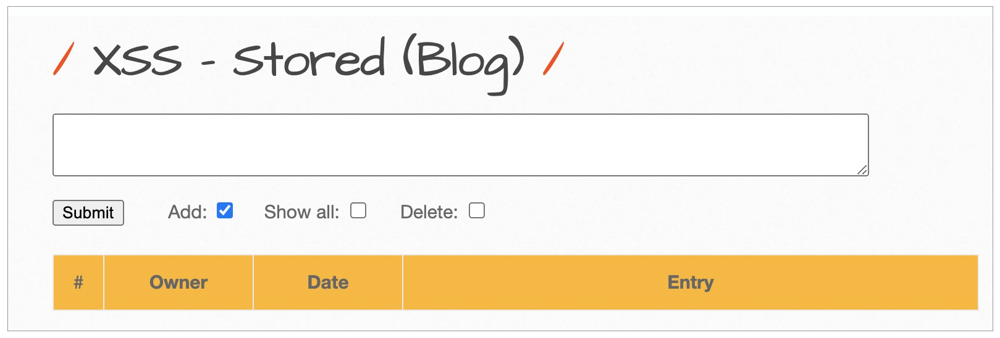
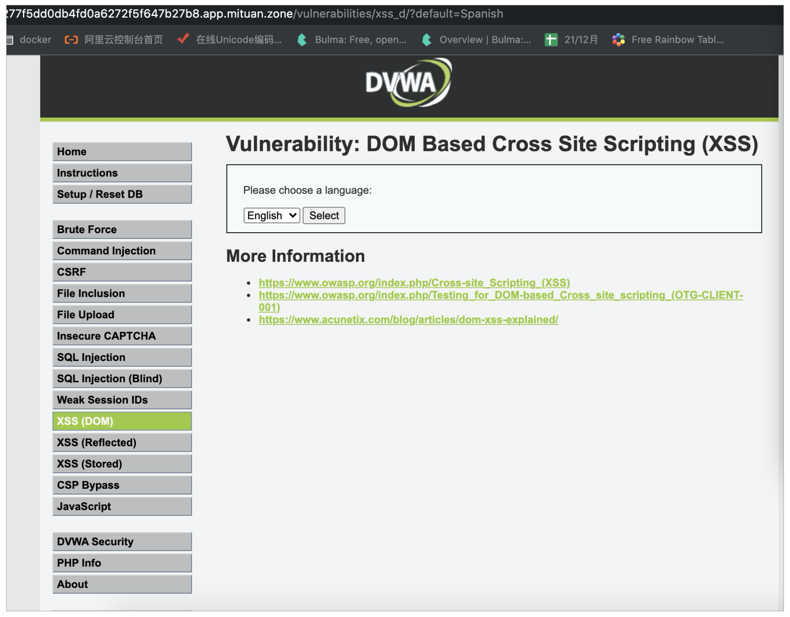
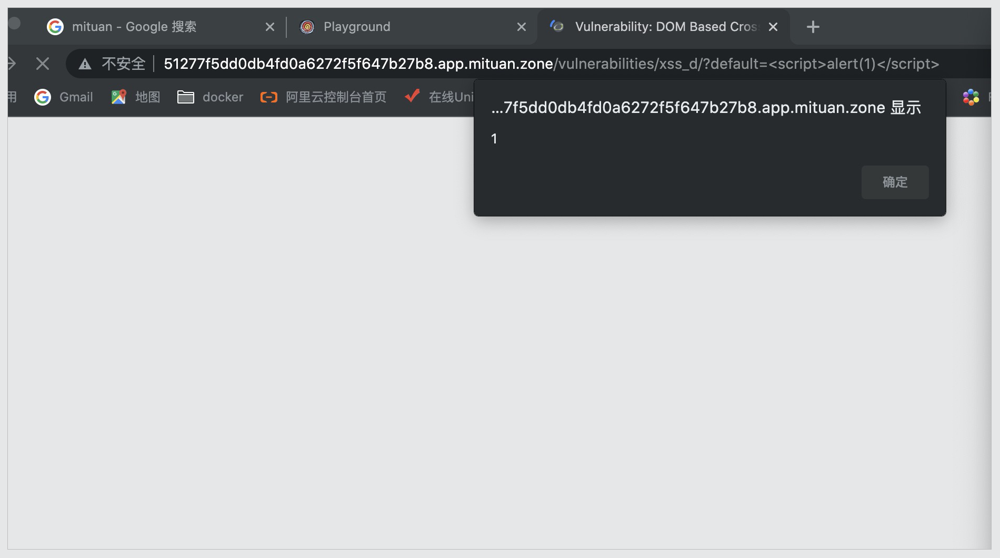

- 00 导读 解读OWASP Top10 2021.md
- 00 开篇词 从黑客的视角找漏洞，从安全的角度优雅coding.md
- 01 失效的访问控制：攻击者如何获取其他用户信息？.md
- 02 路径穿越：你的Web应用系统成了攻击者的资源管理器？.md
- 03 敏感数据泄露：攻击者如何获取用户账户？.md
- 04 权限不合理：攻击者进来就是root权限？.md
- 05 CSRF：为什么用户的操作他自己不承认？.md
- 06 加密失败：使用了加密算法也会被破解吗？.md
- 07 弱编码：程序之间的沟通语言安全吗？.md
- 08 数字证书：攻击者可以伪造证书吗？.md
- 09 密码算法问题：数学知识如何提高代码可靠性？.md
- 10 弱随机数生成器：攻击者如何预测随机数？.md
- 11 忘记加“盐”：加密结果强度不够吗？.md
- 12 注入（上）：SQL注入起手式.md
- 13 注入（下）：SQL注入技战法及相关安全实践.md
- 14 自动化注入神器（一）：sqlmap的设计思路解析.md
- 15 自动化注入神器（二）：sqlmap的设计架构解析.md
- 16 自动化注入神器（三）：sqlmap的核心实现拆解.md
- 17 自动化注入神器（四）：sqlmap的核心功能解析.md
- 19 失效的输入检测（上）：攻击者有哪些绕过方案？.md
- 20 失效的输入检测（下）：攻击者有哪些绕过方案？.md
- 21 XSS（上）：前端攻防的主战场.md
- 22 XSS（中）：跨站脚本攻击的危害性.md
- 23 XSS（下）：检测与防御方案解析.md
- 24 资源注入：攻击方式为什么会升级？.md
- 25 业务逻辑漏洞：好的开始是成功的一半.md
- 26 包含敏感信息的报错：将安全开发标准应用到项目中.md
- 27 用户账户安全：账户安全体系设计方案与实践.md
- 28 安全配置错误：安全问题不只是代码安全.md
- 29 Session与Cookie：账户体系的安全设计原理.md
- 30 HTTP Header安全标志：协议级别的安全支持.md
- 31 易受攻击和过时的组件：DevSecOps与依赖项安全检查.md
- 32 软件和数据完整性故障：SolarWinds事件的幕后⿊⼿.md
- 33 SSRF：穿越边界防护的利刃.md
- 34 Crawler VS Fuzzing：DAST与机器学习.md
- 35 自动化攻防：低代码驱动的渗透工具积累.md
- 36 智能攻防：构建个性化攻防平台.md
- 大咖助场 数字证书，困境与未来.md
- 春节策划（一） 视频课内容精选：Web渗透测试工具教学.md
- 春节策划（三） 一套测试题，看看对课程内容的掌握情况.md
- 春节策划（二） 给你推荐4本Web安全图书.md
- 结束语 无畏前行.md
21 XSS（上）：前端攻防的主战场
你好，我是王昊天。
如今，我们开发一个Web应用需要用到前端和后端两部分。其中前端主要用于数据的渲染，将信息更好地展示给我们；后端则需要获取数据，将合适的信息展示给我们。只有前端和后端一起合作，才能构建出一个优秀的Web应用。
在之前的课程中，我们学习了SQL注入、命令注入这两种注入攻击，它们都是针对Web后端的攻击。那么注入攻击可以针对前端执行吗？答案是肯定的，今天我们要学习的XSS即跨站脚本攻击就是针对前端的攻击方式，下面让我们开始对它的学习吧。
XSS介绍
XSS即跨站脚本攻击，是OWASP TOP10之一。它的全称为Cross-site scripting，之所以缩写为XSS是因为CSS这个简称已经被占用了。这就是XSS名称的由来。
XSS攻击的原理为，浏览器将用户输入的恶意内容当做脚本去执行，从而导致了恶意功能的执行，这种针对用户浏览器的攻击即跨站脚本攻击。它的攻击方式可以分为三种类型，我在下图将它们列举出来了。

下面让我们进一步来学习它的攻击方式吧。
反射型XSS
当应用程序将收到的用户输入，直接作为HTML输出的一部分时，并且未经验证或转义，攻击者就可以输入一些JavaScript脚本，使得受害者的浏览器执行任意的JavaScript代码。这就是反射型XSS攻击，之所以称之为反射型XSS，是因为这种攻击需要用户提供一个恶意输入，然后页面据此进行反射，执行攻击的命令。
为了加深你的理解，我们一起来看一个示例。

上述是一个反射型XSS注入的靶场，我们需要在其中输入并上传两个参数First name以及Last name，然后该Web应用在接收到上传的参数后，会将它们显示在页面上，如Welcome firstname lastname。
查看页面的元素，我们可以看到输入的参数直接被放在HTML的body中。
<body>
# ...
<div id="main">
# ...
"Welcome first name last name"
</div>
由于页面中没有对我们的输入进行限制，导致了我们可以直接在First name中输入，在Last name中随意输入任何字符串例如abc，这样就能导致XSS攻击。

可以看到我们输入的恶意JavaScript脚本alert(1)已经执行成功，弹出了一个警告框。我们再次检查页面的源代码，发现如下所示：
<body>
# ...
<div id="main">
# ...
" Welcome “
<script>alert(1)</script>
” abc "
</div>
我们在First name中输入的恶意脚本，被解析为JavaScript命令，所以我们的攻击成功了。
上面例子中的行为，看似是我们自己在攻击自己，但事实上也可以攻击别人，使得别人在访问一个页面时受到我们发起的XSS攻击。你可以想一想要如何利用反射型XSS攻击别人？
事实上，我们发送的First name以及Last name都是通过GET方式上传的参数，而在之前的学习中，我们知道以GET方式上传的参数会出现在链接中，例如我们将First name设为，将Last name设为abc，那么对应的恶意链接就如下所示：
http://1e2b92939584409b89297897efdf1599.app.mituan.zone/xss_get.php?firstname=%3Cscript%3Ealert%281%29%3C%2Fscript%3E&lastname=abc&form=submit
我们只需要将这个恶意链接发送给要攻击的目标即可，这样只要受害者点击链接，那么恶意命令就会在受害者的浏览器执行。
上述示例中，Web没有对我们的输入做任何限制，使得我们的JavaScript脚本顺利执行，接下来我们来看反射型注入如果受到限制该如何破解呢？

例如这个示例中，我们输入一个JavaScript脚本，但是它就不会被执行，通过查看页面源代码：
<p>Hello <script>alert(1)</script>, please vote for your favorite movie.</p>
我们可知，它不会被执行的原因是
将我们的输入包裹起来了，在HTML中，这代表了限制其中包裹的内容为文本，那么这里你有什么好办法来绕过这个限制吗？比如，类似SQL注入中的闭合操作？没错，我们可以将它的
标签闭合起来，构造输入如下：
# 输入为：
</p><script>alert(1)</script><p>
# 响应的html变为：
<p>Hello </p><script>alert(1)</script><p>, please vote for your favorite movie.</p>
这样我们就可以将
标签闭合，成功执行我们的JavaScript恶意代码。
从上述内容中，我们可以知道，反射型XSS具有非持久化的特点，因为用户必须点击带有恶意参数的链接才能引起这个攻击。同时它的影响范围很小，只有那些点击了恶意链接的用户才会受到它的攻击。
接下来让我们进入到另一种更危险的XSS攻击中——存储型XSS攻击。
存储型XSS
存储型XSS是指应用程序通过Web请求获取不可信赖的数据，在未检验数据是否存在XSS代码的情况下，便将其存入数据库。当下一次从数据库中获取该数据时，程序也没有对其进行过滤，使得页面再次执行XSS代码。与反射型XSS不同的是，存储型XSS可以持续攻击用户。
攻击者想要发起存储型XSS攻击，首先需要将恶意代码进行上传，上传的位置主要有留言板、评论区、用户头像、个性签名以及博客。如果Web应用没有限制上传的内容，并且将该内容存储到了数据库中，那么存储型XSS就成功了第一步。
接下来，想要使得存储型XSS攻击生效，还需要让Web应用去读取之前存储的恶意代码。这其实很简单，我们可以想一想留言板，我们只要上传一条留言，那么每次去访问这个留言板时，系统就会自动去读取之前上传的所有数据，并在页面上显示出来。当然系统可能会对读取的数据做一定的限制，如果我们的恶意代码没有被限制，那么我们的存储型XSS攻击的第二步也就成功了。
完成了读取后，系统会将内容进行解析读取，如果解析的时候没有成功限制住我们的恶意代码，那么我们之前存储的恶意命令将被执行。存储型XSS攻击也就成功啦！
下面，让我们一起看一个示例，来加深一下对存储型XSS攻击的理解。

在这个示例中，Web应用选择的为一个博客，我们可以在此输入一个恶意命令作为博客，并且进行上传。例如我们输入点击上传，之后页面会刷新，并且弹出警告框1，之后这个页面每次被访问，都会引起恶意命令的执行。
从结果我们知道，我们的恶意命令成功执行，这代表了我们的恶意输入被上传到数据库中，并且Web应用读取了它，将它解析出来。
根据我们对存储型XSS攻击的了解，我们不难知道，它的危害性是远远高于反射型XSS攻击的。因为它的影响范围远远高于反射型XSS，它会影响到所有访问到受攻击Web页面的用户。
完成了存储型XSS攻击的学习后，接下来让我们接着学习DOM型XSS攻击。
DOM型XSS
首先我们需要知道什么是DOM，DOM就是文档对象模型，它可以将文档解析成一个由节点和对象（包含属性和方法的对象）组成的结构集合。简单来讲，它会将Web页面和脚本程序连接起来。
DOM型XSS攻击其实是一种特殊类型的反射型XSS，通过JavaScript操作DOM树动态地输出数据到页面，而不依赖于将数据提交给服务器端，它是基于DOM文档对象模型的一种漏洞。
根据之前的学习，我们可以明白，在DOM型XSS中，整个过程和后端无关，它完全是基于前端的攻击，所以当我们遇到要绕Waf的时候，就可以使用这种攻击，因为Waf是基于后端进行拦截的。
DOM型XSS的攻击方式，其实与反射型XSS很相似，它们都是没有控制好输入，并且把JavaScript脚本作为输出插入到HTML页面。不同的是，反射型XSS经过后端语言处理后，页面引用后端输出生效。而DOM型XSS是经过JavaScript对DOM树直接操作后插入到页面。相比于反射型XSS攻击，它的危害性更大，因为它不经过后端，所以可以绕过Waf的检测。
下面让我们从实战中，更深入地学习DOM型XSS攻击。
实战演练
在这个案例中，该靶场已经搭建于谜团中，你可以访问DVWA靶场进行实战测试。
我们在登录后，选择DVWA Security为low，然后打开XSS(DOM)靶场。

打开后发现了一个选择框，我们无法从这里进行输入，通过点击Select按钮，我们从链接中可以发现，它是通过GET方式上传的参数。
http://51277f5dd0db4fd0a6272f5f647b27b8.app.mituan.zone/vulnerabilities/xss_d/?default=English
这就给了我们输入的机会，然后进一步观察页面的源代码，对此进行分析。
if (document.location.href.indexOf(“default=“) >= 0) {
var lang = document.location.href.substring(document.location.href.indexOf(“default=“)+8);
document.write(“<option value=‘” + lang + “’>” + decodeURI(lang) + “</option>”);
document.write(“<option value=‘’ disabled=‘disabled’>——</option>”);
}
从源代码中我们可知，这个页面属于DOM型XSS攻击，它没有经过后端处理，是直接用document.write函数将输入显示在页面中，并且没有做任何限制。因此我们可以用下述链接执行我们的攻击命令：
http://51277f5dd0db4fd0a6272f5f647b27b8.app.mituan.zone/vulnerabilities/xss_d/?default=<script>alert(1)</script>

可以看到，我们的攻击已经成功，一个警告框已经弹出来了。
总结
在这节课里，我们首先了解了什么是XSS攻击，并且知道它主要可以分为三种不同的类型，包括反射型XSS、存储型XSS以及DOM型XSS。之后我们对它们分别展开了具体的学习。
在对反射型XSS的学习中，我们知道反射型XSS的攻击需要用户提供一个恶意输入，然后页面据此进行反射，执行攻击的命令。同时，我们也知道了，当我们的输入被HTML标签限制住，可以用闭合的方法来解除它的限制。反射型XSS具有非持久化的特点，因为用户必须点击带有恶意参数的链接才能引起这个攻击，同时它的影响范围很小，只有那些点击了恶意链接的用户才会受到它的攻击。
之后我们学习了危害性更大的存储型XSS，存储型XSS是指应用程序通过Web请求获取不可信赖的数据，在未检验数据是否存在XSS代码的情况下，便将其存入数据库。当下一次从数据库中获取该数据时，程序也没有对其进行过滤，使得页面再次执行XSS代码。与反射型XSS不同的是，存储型XSS可以持续攻击用户，我们每次访问被攻击的Web页面都会受到这个攻击的影响。
最后，我们学习了DOM型XSS攻击，经过学习，我们知道DOM型XSS攻击其实是一种特殊类型的反射型XSS，通过JavaScript操作DOM树动态地输出数据到页面，而不依赖于将数据提交给服务器端，它是基于DOM文档对象模型的一种漏洞。它与反射型XSS不同的是，反射型XSS经过后端语言处理后，页面引用后端输出生效。而DOM型XSS是经过JavaScript对DOM树直接操作后插入到页面。相比于反射型XSS攻击，它的危害性更大，因为它不经过后端，所以可以绕过Waf的检测。
思考
最后留给你一道思考题：XSS攻击有什么防范方法吗？
欢迎在评论区留下你的思考。如果觉得今天的内容对你有所帮助的话，也欢迎你把课程分享给其他同事或朋友，我们共同学习进步！
© 2019 - 2023 Liangliang Lee. Powered by gin and hexo-theme-book.